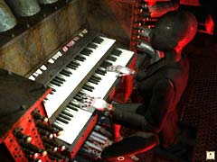
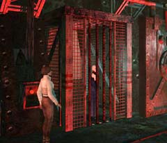
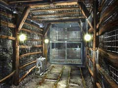
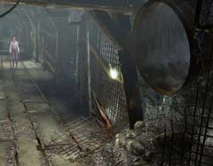
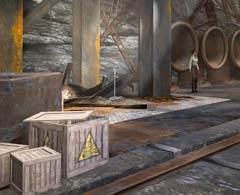
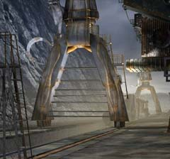

| 概要 | 地図 | |
| 淡いヒント集 | ヒント集 | 的確なヒント集 |
| 攻略最短ルート | Syberia 攻略へ |
|
まずは、この南京錠を壊してしまおう。「ペンチ」を使えば簡単に壊せるはずだ。 扉が開くと、ヘレナがふらふらと外へ出るが、彼女のことはひとまず置いておき、オスカーの腕を回収しよう。

オスカーの腕は、パイプオルガン伴奏者の腕として使われている。どのように取り付けてあるのか調べてみると、ねじ1本だけときわめて簡単な構造となっている。 ドライバーを持っているはずなので、それで取り外してしまおう。

エレベーターにヘレナを乗せたところで、急に柵が出てきてあなたは乗りそびれてしまう。しかし、落ち着いて欲しい。出口は必ずあるのだ。 近くにエレベーターがあるので、あなたはそちらへ向かえばよい。

エレベーターを降りてしばらくすると、工場へ通じるエレベーターが破壊されてしまう。もはや、出口は一つしかない。奥へ進み、レバーをおろしてエレベーターが来るのを待とう。 しかし、物事はなかなかうまくいかないのだ。エレベーターには時限爆弾が置いてある。それを見つけたあなたは、あわてて坑道の奥へ逃げ、命だけは助かったがエレベーターは壊れて出口がなくなってしまう。

しかし、落ち着いて欲しい。出口はあるのだ。

無事坑道から脱出したあなたには、あることに気づいて欲しい。上の画像のように、左下の木箱のフタが開いているのだ。 中をのぞいてみよう。爆弾が入っている。この爆弾は何に使うのだろうか? 答えはすぐに出るはずだ。

爆弾はこのバリケードに取り付けるのだ。 |
| 概要 | 地図 | |
| 淡いヒント集 | ヒント集 | 的確なヒント集 |
| 攻略最短ルート | Syberia 攻略へ |